UNIT 3 · VOCABULARY
身體部位
Parts of body
24 個單字聽・唸・用
本單元單字一覽
從頭到腳的身體部位名詞，共 24 個。注意不規則複數 tooth → teeth、foot → feet。
eareyefacehairlipmouthnosetootharmbackbodyfingerfoothandheadkneelegnailneckshoulderthroattoeheartstomach
每個字都有 🔊，先聽發音、跟著唸，再看例句。
單字 1–4
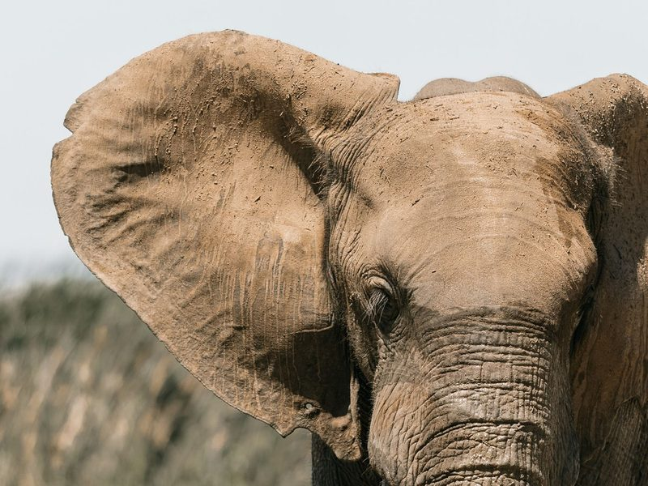
ear
耳朵n.
Elephants have big ears.
大象有大耳朵。
eye
眼睛；視力n.
Close your eyes and make a wish.
閉上眼睛，許個願。
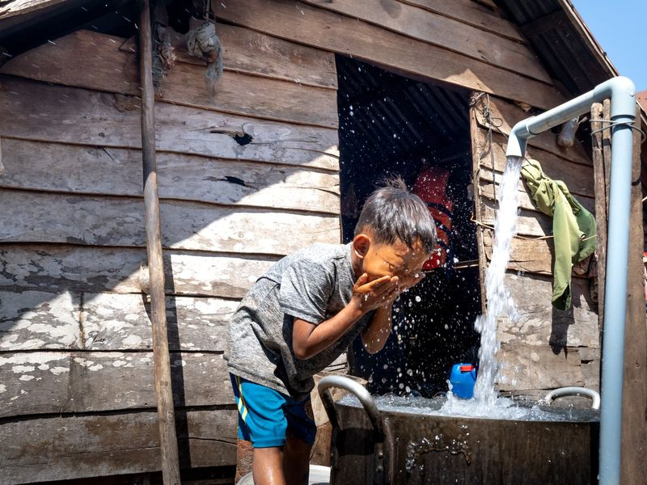
face
臉；表情n.
Wash your face before breakfast.
吃早餐前先洗臉。
hair
頭髮；毛髮n.
My sister has long hair.
我姊姊有一頭長髮。
單字 5–8
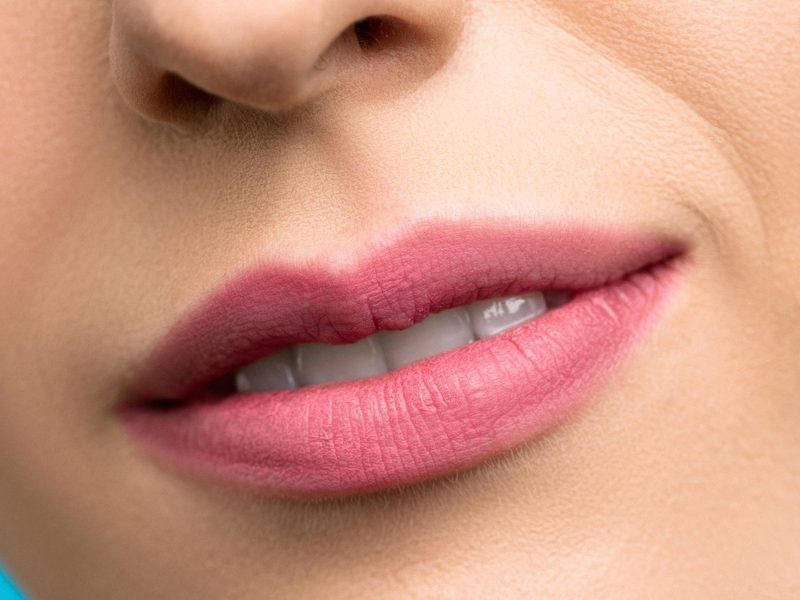
lip
嘴唇n.
My lips are dry in winter.
冬天我的嘴唇很乾。
mouth
嘴n.
Don't talk with food in your mouth.
嘴裡有食物時不要講話。
nose
鼻子n.
I have a cold and a runny nose.
我感冒了，還流鼻水。
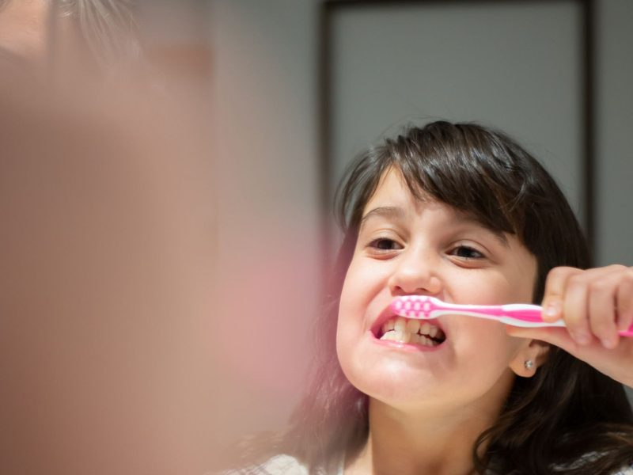
tooth
牙齒n.
Brush your teeth before bed.
睡前要刷牙。
單字 9–12
arm
手臂n.
Mom holds the baby in her arms.
媽媽把寶寶抱在懷裡。
back
背部；支持n. / v.
My back hurts after carrying the box.
搬完箱子後我的背好痛。
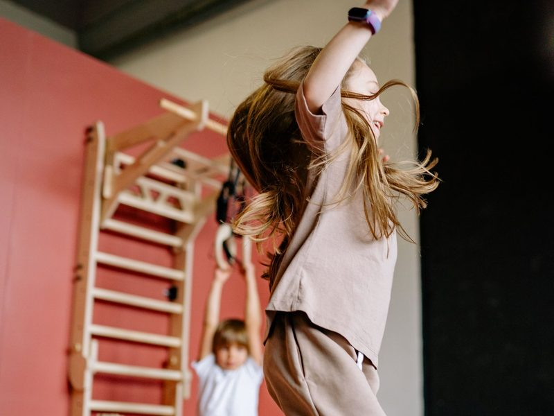
body
身體n.
Exercise is good for your body.
運動對身體有益。
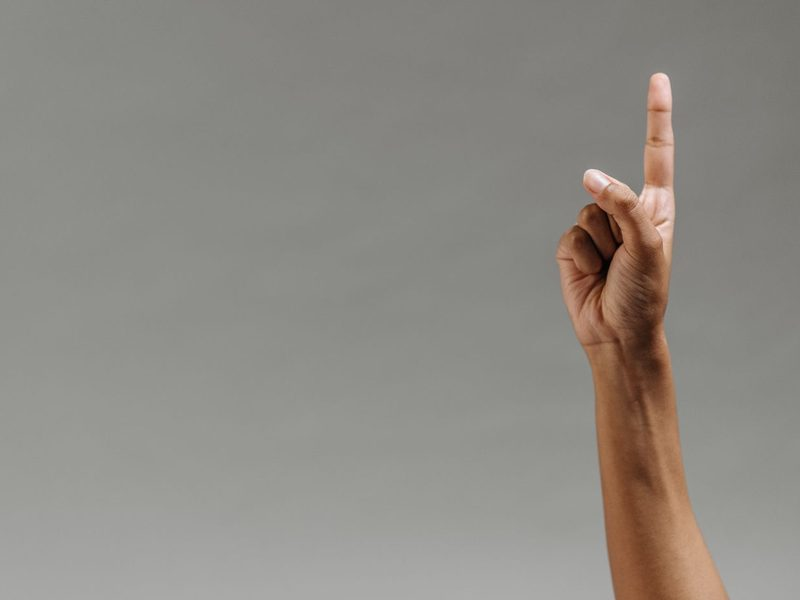
finger
手指n.
I cut my finger when I made dinner.
我做晚餐時割傷了手指。
單字 13–16
foot
腳n.
I go to school on foot.
我走路上學。
hand
手n.
Can you give me a hand?
你可以幫我一個忙嗎？
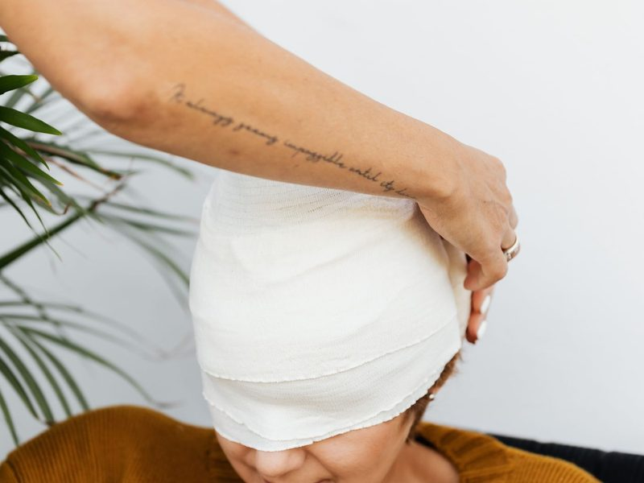
head
頭n.
The ball hit him on the head.
球打中了他的頭。
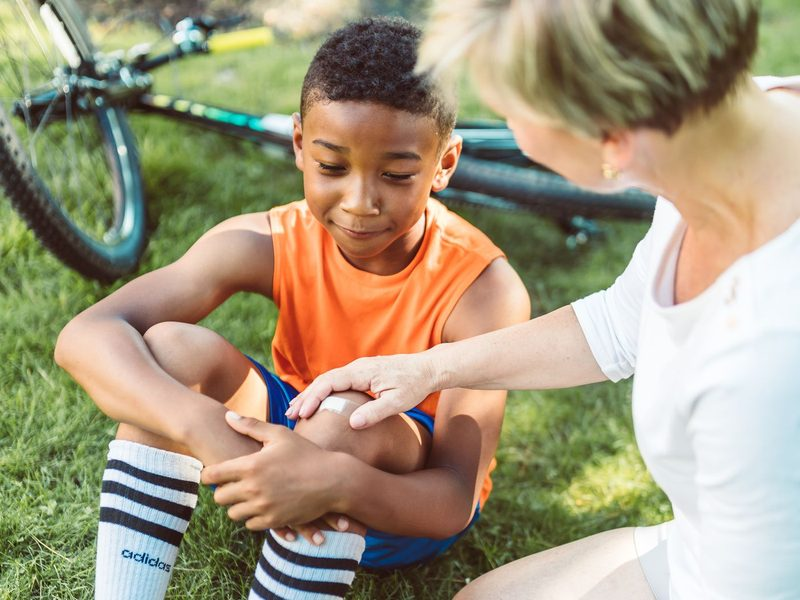
knee
膝蓋n.
He fell and hurt his knee.
他跌倒傷了膝蓋。
單字 17–20
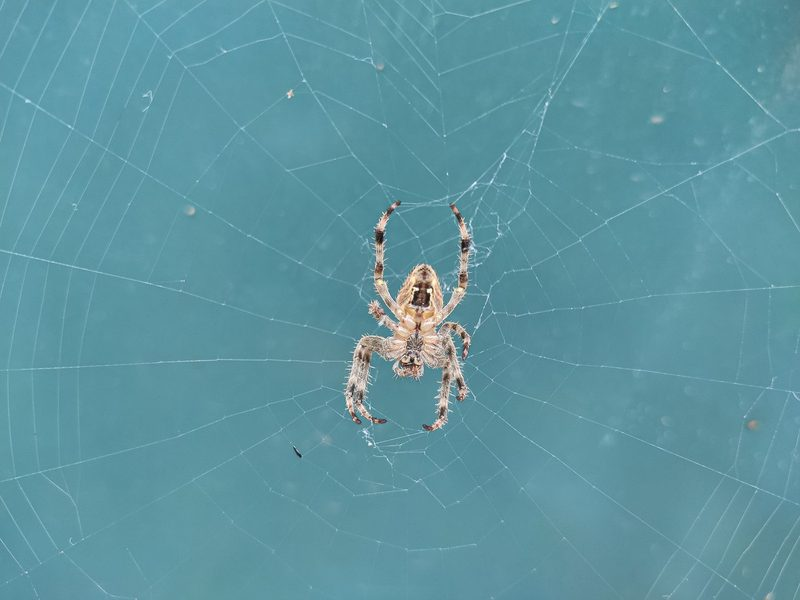
leg
腿n.
A spider has eight legs.
蜘蛛有八隻腳。
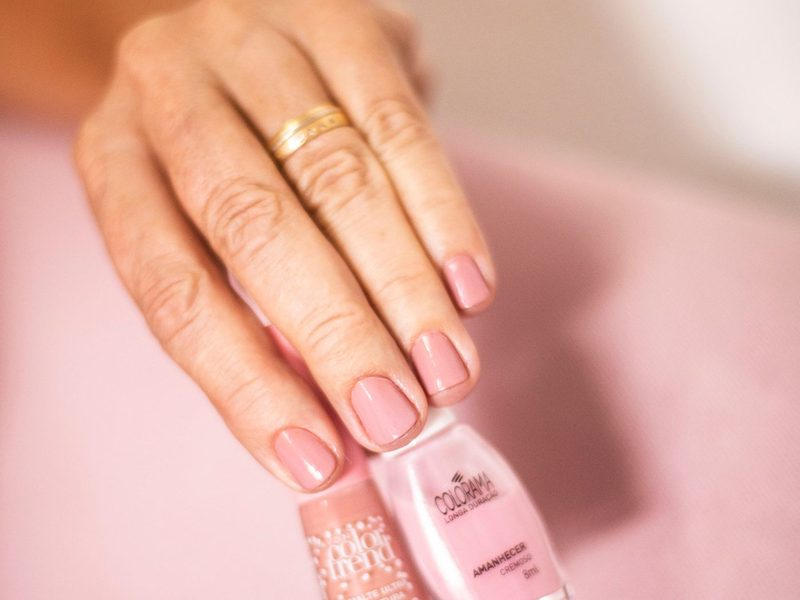
nail
指甲n.
Don't bite your nails.
不要咬指甲。
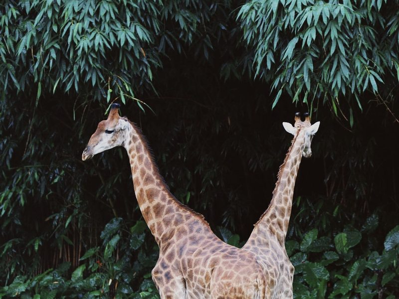
neck
脖子；頸部n.
Giraffes have long necks.
長頸鹿有長長的脖子。
shoulder
肩膀n.
Dad carries me on his shoulders.
爸爸讓我坐在他的肩膀上。
單字 21–24
throat
喉嚨n.
I have a sore throat today.
我今天喉嚨痛。
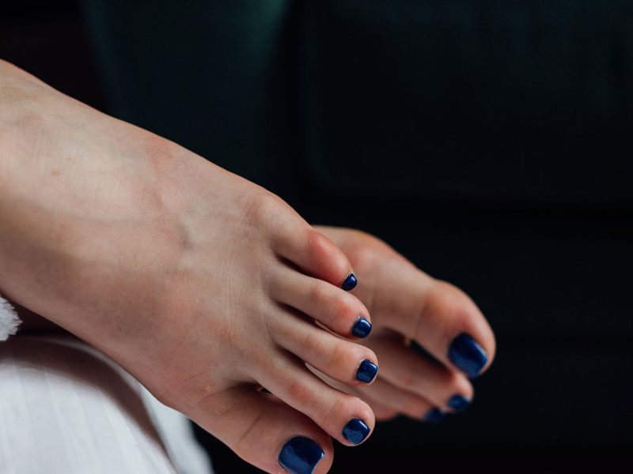
toe
腳趾n.
Ouch! You stepped on my toe.
哎喲！你踩到我的腳趾了。
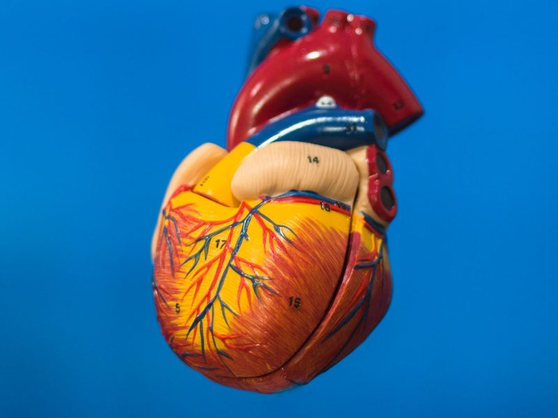
heart
心臟；紅心n.
My heart beats fast when I run.
我跑步時心跳很快。
stomach
胃；肚子n.
My stomach hurts. I ate too much.
我肚子好痛，我吃太多了。
不規則的複數
| 單數 | 複數 | 規則 |
|---|
| tooth | teeth | oo 變 ee |
| foot | feet | oo 變 ee |
| body | bodies | 子音 + y：去 y 加 -ies |
| mouth | mouths | 直接加 -s |
大部分直接加 -s：ears、eyes、lips、arms、legs。hair 當「頭髮」時不可數：She has long hair.（不是 hairs）詳見文法「名詞的複數」。
身體不舒服怎麼說？
| 英文 | 中文 |
|---|
| I have a headache. | 我頭痛。 |
| I have a toothache. | 我牙痛。 |
| I have a stomachache. | 我肚子痛。 |
| I have a sore throat. | 我喉嚨痛。 |
| I have a runny nose. | 我流鼻水。 |
| My back hurts. | 我的背好痛。 |
部位 + ache ＝ …痛：head → headache、tooth → toothache、stomach → stomachache。Unit 4 Health 會再學 headache。
快問快答：中文 → 英文
1耳朵ear
2嘴mouth
3牙齒tooth
4手臂arm
5手指finger
6膝蓋knee
7脖子；頸部neck
8胃；肚子stomach
快問快答：英文 → 中文
1eye眼睛；視力
2hair頭髮；毛髮
3lip嘴唇
4back背部；支持
5foot腳
6shoulder肩膀
7throat喉嚨
8toe腳趾
學完了！接下來
複習方法
review
- 回到「📗 單字卡」，按「遮中文」自己考自己
- 再按「遮英文」，看中文說出英文
- 每個例句跟著 🔊 唸一次
準備好了
- 按右上角「📝 前往測驗」
- 測驗錯的題目要訂正到全對
- 訂正完成補送 1 點